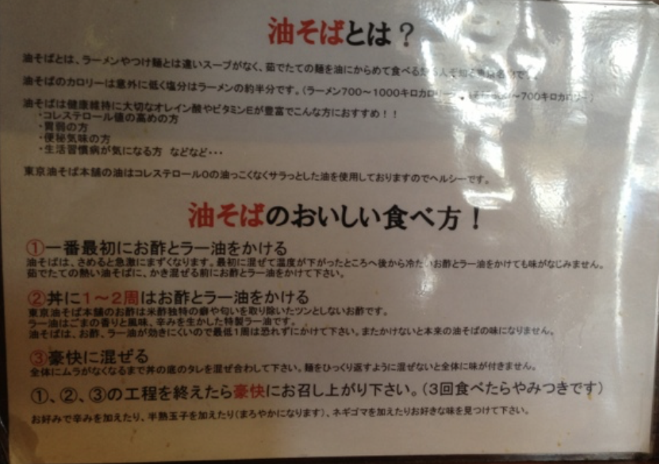

油そばのおいしい食べ方！
- 一番最初にお酢とラー油をかける
油そばは、冷めると急激にまずくなります。最初に混ぜて温度が下がったところへ後から冷たいお酢とラー油をかけても味がなじみません。茹でたての熱い油そばに、かき混ぜる前にお酢とラー油をかけて下さい。
- 丼に1～2周はお酢とラー油をかける
東京油そば本舗のお酢は米酢独特の癖や匂いを取り除いたツンとしないお酢です。ラー油はごまの香りと風味、辛みを生かした特製ラー油です。油そばは、お酢、ラー油が効きにくいので最低一周は恐れずにかけて下さい。またかけないと本来の油そばの味になりません。
- 豪快に混ぜる
全体にムラがなくなるまでの丼のタレを混ぜ合わして下さい。麺をひっくり返すように混ぜないと全体に味が付きません。①、②、③の工程を終えたら豪快にお召し上がり下さい。（3回食べたらやみつきです）お好みで辛みを加えたり、半熟玉子を加えたり（まろやかになります）、ネギゴマを加えたりお好きな味を見つけて下さい。

How to Enjoy Abura Soba!
- First, add vinegar and chili oil
Abura Soba loses its taste quickly when it cools down. If you mix it first and then add cold vinegar and chili oil afterwards, the flavors won't blend well. Make sure to add vinegar and chili oil before mixing the freshly cooked hot noodles.
- Add 1-2 rounds of vinegar and chili oil
Our special vinegar is free from the strong smell and taste typical of rice vinegar, and our chili oil is specially made to enhance the flavor and aroma of sesame. Since the vinegar and chili oil do not blend easily with the noodles, do not hesitate to add at least one round. Without it, the true flavor of Abura Soba will not be achieved.
- Mix thoroughly and vigorously
Mix the noodles well until the sauce is evenly distributed. You need to turn the noodles over while mixing to ensure the entire dish is flavored. After completing steps 1, 2, and 3, enjoy your meal vigorously. (You will be hooked after eating it three times!) Feel free to add some spice, a soft-boiled egg for a milder taste, or chopped green onions and sesame seeds to find your favorite flavor.